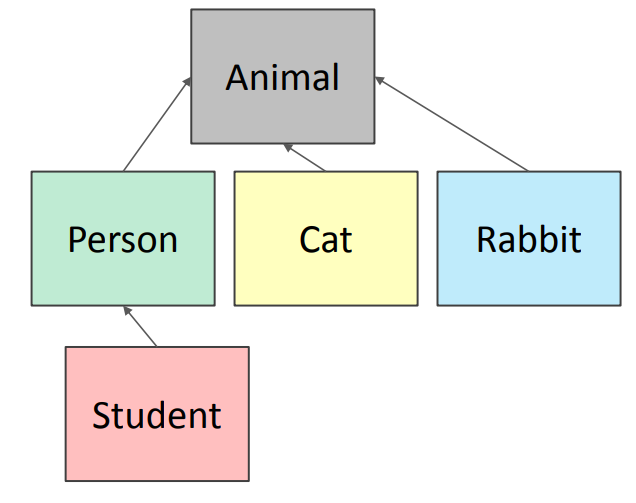

Today
- More on classes
- getters and setters
- information hiding
- class variables
- Inheritance
Implementing the class vs. Using the class
- Write code from two perspectives
| Implementing a new object type with a class | Using a new object type in code |
- define the class
- define data attributes (WHAT IS the object)
- define methods (HOW TO use the object)
|
- create instances of the object type
- do operations with them
|
Class definition of an object type Vs. Instance of a class
class name is the type: class Coordinate(object) |
instance is one specific object: coord = Coordinate(1,2)
|
class is defined generically
- use
self to refer to some instance while defining the class.
self is a parameter to methods in class definition
|
Data attribute values vary between instances
c1 = Coordinate(1,2); c2 = Coordinate(3,4)
-
c1 and c2 have different data attribute
values c1.x and c2.x because they are different
objects.
|
| class defines data and methods common across all instances |
instance has the structure of the class |
Why use OOP and Classes of Objects?
- Mimic real life
- Group different objects part of the same type:
- Name: Tom, Type: Cat, Age: 1 year old, Colour: grey
- Name: Felix, Type: Cat, Age: 5 year old, Colour: brown
- Name: Jerry, Type: Mouse, Age: 2 years old, Colour: brown
- Name: Mickey, Type: Mouse, Age: 3 years old, Colour: black
Recap: groups of objects have attributes
- data attributes
- how can you represent your object with data?
- what it is
- for a coordinate: x and y values
- for an animal: age, name
- procedural attributes (behaviour, operations, methods)
- how can someone interact with the object?
- what it does
- for a coordinate: find distance between two
- for an animal: make a sound
Recap: How to define a class
class Animal(object):
def __init__(self, age):
self.age = age
self.name = None
myanimal = Animal(3)
Getter and setter methods
class Animal(object):
def __init__(self, age):
self.age = age
self.name = None
def get_age(self):
return self.age
def get_name(self):
return self.name
def set_age(self, newage):
self.age = newage
def set_name(self, newname==""):
self.name = newname
def __str__(self):
return "animal:" + str(self.name) + ":" + str(self.age)
- getters and setters should be used outside of class to access data attributes
Recap: An instance and dot notation
- Instantiation creates an instance of an object
a = Animal(3)
- dot notation used to access attributes (data and methods) though it
is better to use getters and setters to access attributes:
a.age (allowed, but not recommended) vs. a.get_age() (best to use getters and setters).
Information hiding
Python not great at Information hiding
- Allows you to access data from outside class definition
print(a.age)
- Allows you to write the data from outside class definition
a.age = 'abc'
- Allows you to create data attributes for an instance
from outside class definition
a.size = "tiny"
- It is not good style to do any of these!
Default arguments
- Default arguments for formal parameters are used if no actual argument is given
def set_name(self, newname=""):
self.name = newname
- Default argument used here
a = Animal(3)
a.set_name()
print(a.get_name()) #prints ""
- Argument passed in is used here
a = Animal(3)
a.set_name("fluffy")
print(a.get_name()) #prints "fluffy"
Hierarchies
Example:
Hierarchies
- parent class (superclass)
- child class (subclass)
- inherits all data and behaviours of parent class
- add more info
- add more behaviour
- override behaviour

Inheritance: parent class
class Animal(object):
def __init__(self, age):
self.age = age
self.name = None
def get_age(self):
return self.age
def get_name(self):
return self.name
def set_age(self, newage):
self.age = newage
def set_name(self, newname = ""):
self.name = newname
def __str__(self):
return "animal:"+str(self.name)+":"+str(self.age)
Inheritance: Subclass
class Cat(Animal): #inherits all attributes of Animal
def speak(self): #adds new functionality of speak method
print("meow")
def __str__(self): #overrides __str__
return "cat:"+str(self.name)+":"+str(self.age)
- add new functionality with
speak()
- instance of type
Cat can be called with new methods
- instance of type
Animal throws error if called with
Cat's new method
Which method to use?
- Subclass can have methods with same name as superclass
- For an instance of a class, look for a method name in current class definition
- If not found, look for method name up the hierarchy (in parent, then grandparent, and so on)
- Use first method up the hierarchy that you found with that method name
Example: Person
class Person(Animal): # parent class is Animal
def __init__(self, name, age):
Animal.__init__(self, age) # call Animal constructor
self.set_name(name) # call Animal method
self.friends = [] # add a new data attribute
# new methods
def get_friends(self):
return self.friends
def add_friend(self, fname):
if fname not in self.friends:
self.friends.append(fname)
def speak(self):
print("hello")
def age_diff(self, other):
diff = self.age - other.age
print(abs(diff), "year difference")
#override Animal's __str__ method
def __str__(self):
return "person:"+str(self.name)+":"+str(self.age)
Example: Student
import random #bring in methods from random class
class Student(Person): # inherits Person and Animal attributes
def __init__(self, name, age, branch=None):
Person.__init__(self, name, age)
self.branch = branch # adds new data
def change_branch(self, branch):
self.branch = branch
def speak(self):
r = random.random() # From Python docs: random() method in random class gives back float in [0,1)
if r < 0.25:
print("I have homework")
elif 0.25 <= r < 0.5:
print("I need sleep")
elif 0.5 <= r < 0.75:
print("I should eat")
else:
print("I am watching YouTube")
def __str__(self):
return "student:"+str(self.name)+":"+str(self.age)+":"+str(self.major)
Class variables and the Rabbit subclass
Class variables are different from data attributes. Class
variables and their values are shared between all instances of a Class.
class Rabbit(Animal):
tag = 1
def __init__(self, age, parent1=None, parent2=None):
Animal.__init__(self, age)
self.parent1 = parent1
self.parent2 = parent2
self.rid = Rabbit.tag #self.rid is an instance attribute. This assignment accesses class variable Rabbit.tag
Rabbit.tag += 1 #incrementing class variable changes it for all instances that may reference it
In this example, tag used to give a unique ID to each rabbit instance.
Rabbit Getter Methods
class Rabbit(Animal):
tag = 1
def __init__(self, age, parent1=None, parent2=None):
Animal.__init__(self, age)
self.parent1 = parent1
self.parent2 = parent2
self.rid = Rabbit.tag
Rabbit.tag += 1
def get_rid(self):
return str(self.rid).zfill(3) # zfill is a method on a string to pad the beginning with zeros, e.g., 001 not 1
# getter methods specific for a Rabbit instance; there are also
# get_name and get_age inherited from Animal
def get_parent1(self):
return self.parent1
def get_parent2(self):
return self.parent2
Working with your own types
def __add__(self, other):
# returning object of same type as this class
return Rabbit(0, self, other) # recall Rabbit's __init__(self, age, parent1, parent2)
- Define + operator between two Rabbit instances
- Define what something like this does:
r4 = r1 + r2 (where r1 and r2 are Rabbit instances)
-
r4 is a new Rabbit instance with age 0
-
r4 has self as one parent and other as the other parent
- Recall that in
__init__, parent1 and parent2 are of type Rabbit
Special method to compare two Rabbits
Two rabbits are equal if they have the same two parents
def __eq__(self, other):
parents_same = self.parent1.rid == other.parent1.rid and self.parent2.rid == other.parent2.rid
parents_opposite = self.parent1.rid == other.parent2.rid and self.parent2.rid == other.parent1.rid
return parents_same or parents_opposite
- Compare IDs of parents as IDs are unique
- Note you cannot compare parents' objects directly:
- Example:
self.parent1 == other.parent1
- This calls the
__eq__ method over and over until call it on None and gives an AttributeError when it tries to do None.parent1
Object Oriented Programming
- Create your own collections of data
- Organize information
- Division of work
- Access information in a consistent manner
- Add layers of complexity
- Like functions, classes are a mechanism for decomposition and abtraction in programming
Summary
Key Topics
- Represent knowledge with data structures
- Iteration and recursion as computational metaphors
- Abstraction of procedures and data types
- Different classes of algorithms, searching and sorting
- Complexity of algorithms
Overview of course
- Learn computational modes of thinking
- Begin to master the art of computational problem solving
- Make computers do what you want them to do
Thinking computationally: abstractions, algorithms, automated execution
- Abstraction
- Choosing the right abstractions
- Operating in multiple layers of abstractions simultaneously
- Defining relationships between the abstraction layers
- Automation
- Think in terms of mechanizing our abstractions
- Mechanization is possible --- because we have precise and exacting notations and models; and because there is some "machine" that can interpret our notations
- Algorithms
- Language for describing automated processes
- And allows abstraction of details
- Language for communicating ideas and processes